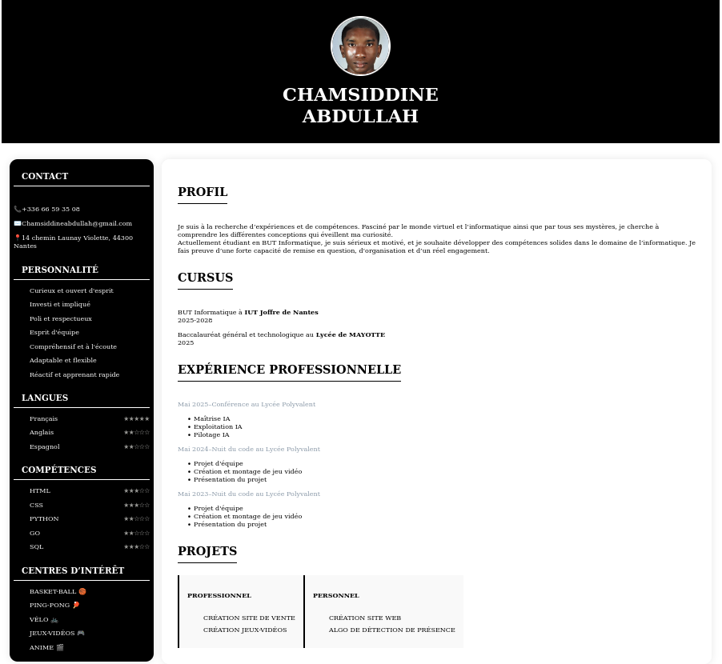
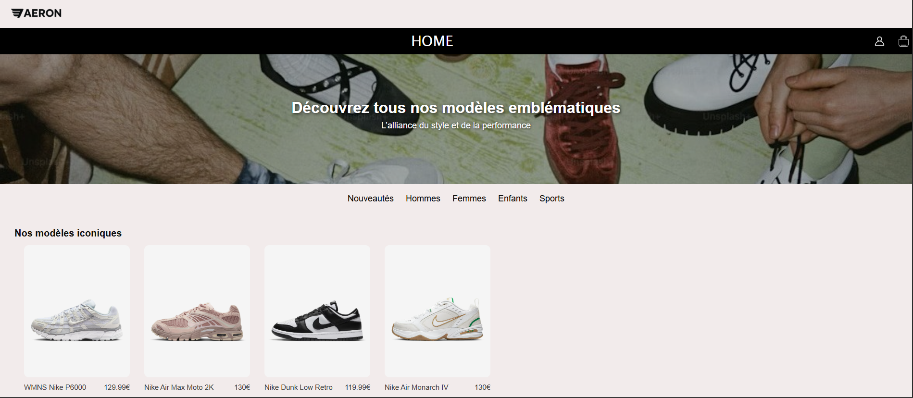
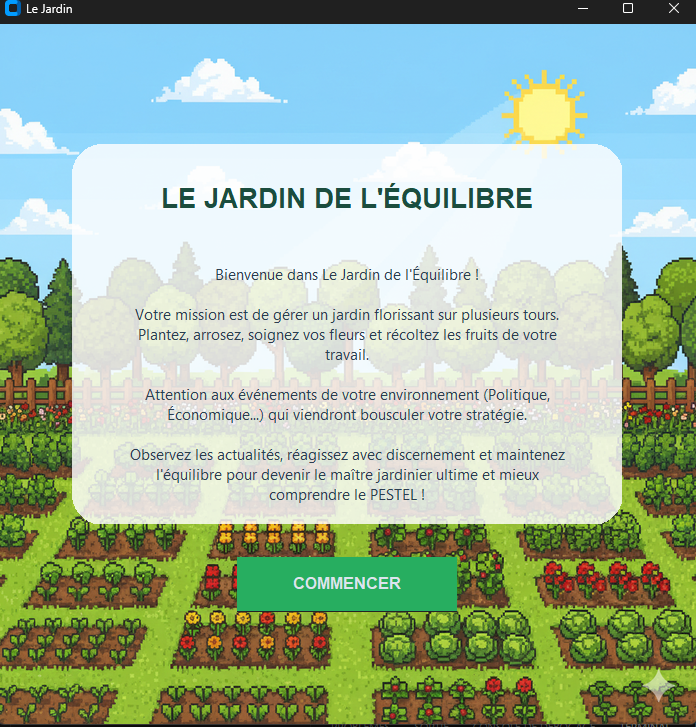
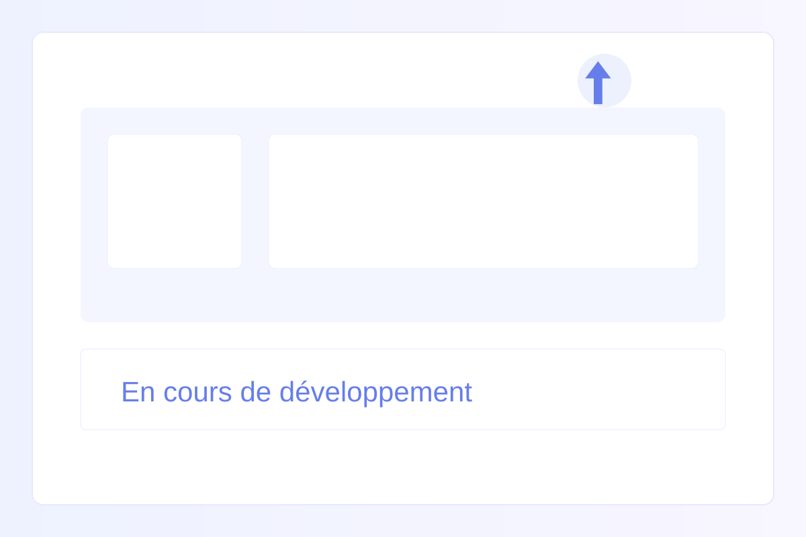
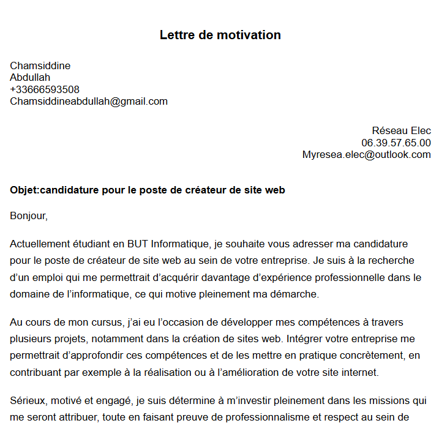

Bienvenue
Découvrez mes projets et mon parcours.
Profil
Je suis Chamsiddine Abdullah, originaire de Mayotte. Je suis passionné par les nouvelles technologies, leur fonctionnement et leur impact dans le monde actuel. En dehors du domaine professionnel, je m’intéresse également à plusieurs activités comme le basket, le volley et le sport en général. J’aime aussi les jeux vidéo, notamment Genshin Impact et Call of Duty, ainsi que les animés, les séries et différents loisirs. J’aime également voyager à travers le monde pour découvrir différentes cultures, technologies et manières de faire.
Profil Professionnel
Actuellement étudiant en BUT Informatique à l’IUT de Nantes, je suis passionné par l’informatique, le monde virtuel et les nouvelles technologies. Je suis à la recherche d’expériences pour renforcer mes compétences dans tous les domaines. Je suis motivé et sérieux dans tout ce que j’entreprends. Je m’implique corps et âme dans les tâches qui me sont confiées afin d’explorer mes compétences et de les mettre en avant. Je suis également capable de m’adapter rapidement à un nouvel environnement et de m’intégrer facilement dans une équipe de travail.
Formation
BUT Informatique (2025-2028) à IUT Nantes
Qualités
Sérieux, motivé, investi, apprenant rapide avec fort engagement
Compétences clés
HTML, CSS, Python,Kotlin, SQL, développement web & applications
Mon CV

Projets pro

Projets académiques

Projets perso

Lettre de motivation
